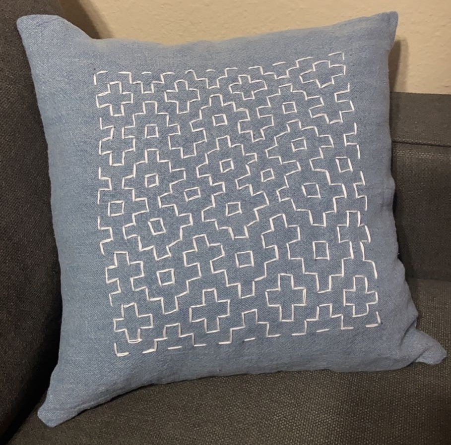
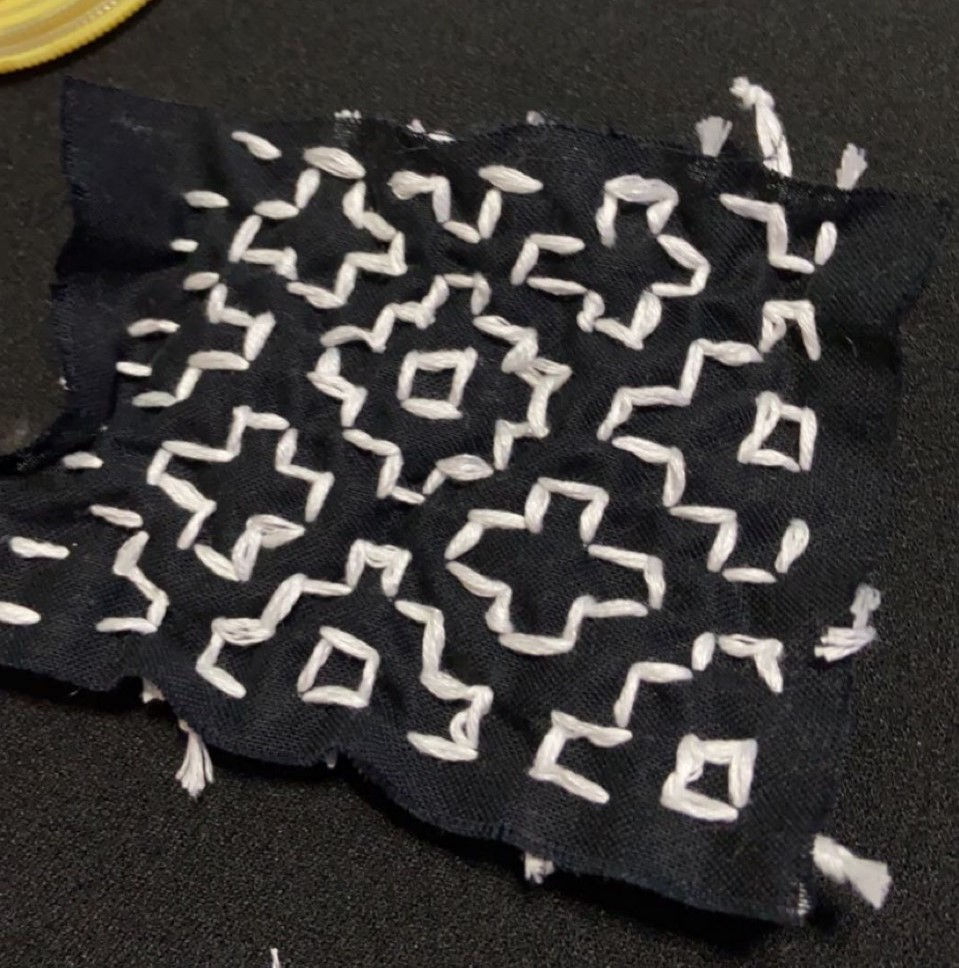

Hitomezashi Stitches
(12 / 9 / 21)
Sashiko is a style of Japanese decorative embroidery. There are two subsets of Sashiko; moyozashi and hitomezashi. The first is done by using a single running stitch to create an entire design and the second uses several stitches along grid lines to make a pattern emerge. I heard about these watching this video by Numberphile and decided to try it out myself.
Above is a tool I made to help visualize the emergent pattern of hitomezashi stitches. Try it yourself by clicking any of the dots to toggle whether a stitch starts up or down! The tool helped me plan out a few patterns I made myself:

